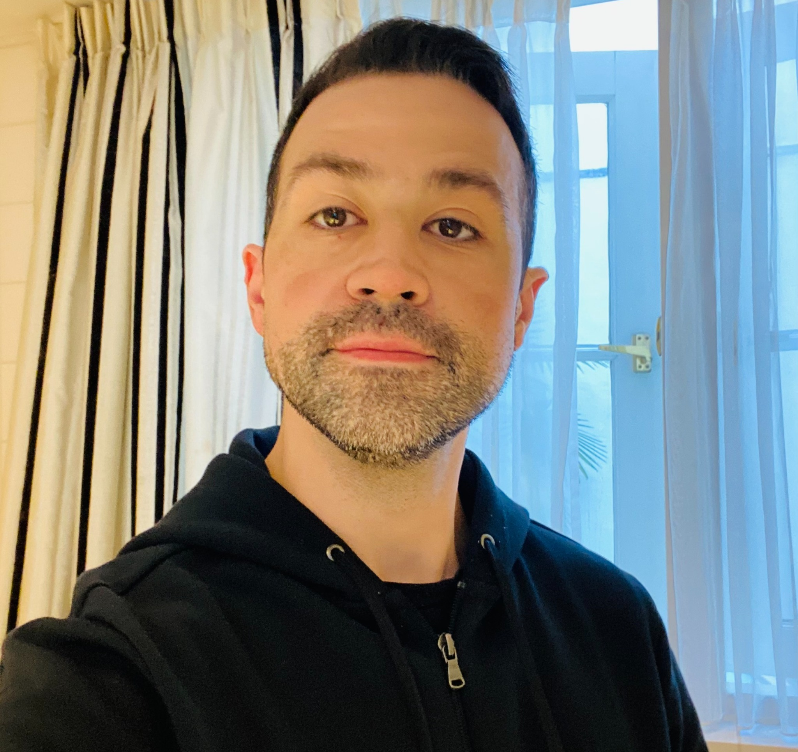

Wander P da Silva
Analista DevOps Senior
Sou apaixonado por tecnologia desde a infância, e minha curiosidade por desenvolver soluções me levou a conhecer minha primeira linguagem de programação: VB6. Com o tempo, tive contato com outras linguagens como C#, COBOL, Java e Python.
Agora, com mais de 10 anos de experiência na área de tecnologia, atuo como engenheiro DevOps, com foco em cloud AWS e desenvolvimento de microservicos em Java. No dia a dia, trabalho com ferramentas e tecnologias como Kubernetes, Istio, Prometheus, Grafana, Splunk e Terraform. Também utilizo python e shell script para construir soluções de automação escaláveis.
🛠 Experiência
- Itaú Unibanco S/A - Mar 2012 - Atual
Engenheiro de sistemas atuando com desenvolvimento e operações de microserviços em Java com Spring na cloud AWS, utilizando tecnologias como Redis, gRPC e Kafka, observability com Grafana, Prometheus e Splunk, para orquestração dos microserviços atuo com kubernetes (EKS), docker e python.
- JD Informática LTDA - Out 2011 - Fev 2012
Exerci minhas atividades profissionais para Seguradoras e instituições financeiras realizando correção e criação de programas em C# e COBOL Microfocus com banco de dados SQL Server.
- COMPASS MINERALS - Ago 2009 - Ago 2011
Estágio na área de infra-estrutura, atuando prontamente com redes, AD, configuração de servidores, uso de ferramentas de suporte remoto, ferramentas de backup e cabeamento!.
💻 Skills técnicas
- Java - Python - Cobol - Shell Script
- AWS - EKS, ECS, Lambda, SQS, SNS, EC2 e etc
- Redis - MySQL - DynamoDB - MongoDB - Aurora/RDS
- Kubernetes - Istio - Docker - Terraform
- Prometheus - Splunk - Grafana - CloudWatch
🏆 Certificações
- CSM - Certified Scrum Master
- LeanIT - EXIN
- GreenIT Ciziten - EXIN
- ISFS - Segurança da informação - EXIN